SmartFA IoT System
Modernizing wire production line and upgrade the productivity, quality control and efficiency
Role
- Information Architecture
- Interface design
- User experience design
OVERVIEW
About the Project
The Pioneer Machinery is a professional manufacturing company for electric cable machinery based in Taipei. In this project, I worked with the Research and Development Team at Pioneer Machinery where I was responsible for designing engaging answers for
the Smart Factory program. The time span of the project was 6 months, I mainly focused on designing the interactive interface for the smart factory. Besides, I also designed the mechanical structure that attached smart glasses
to a helmet. The outcomes of our design included an interactive map and the portable HMI that could overview the whole process line and a real-time surveillance system for advisors.
THE CHALLENGE
Based on establishing a network between production lines and access controlled application, create a visual performance data reporting system to reduce the overall administrative burdens for process line workers and advisors.
USER RESEARCH
Focus Group
This project involves many stakeholders with diverse backgrounds, including the directors, advisors, engineers, process line workers and so. Even though they all worked in cable-related industries, their perspectives are different. We should consider
various perspectives. We conducted the focus group to find their perspectives and needs. We also had a meeting with CIO and software engineers to understand what techniques could support our design.
Discussion themes
1. The condition, context and scenarios of use
2. The interface used in production line now
3. The expectation of new user interface
4. What kind of technology could support
2. The interface used in production line now
3. The expectation of new user interface
4. What kind of technology could support
Question script
1. How do you feel about the interface you used now
2. Do the information architect meet expectation
3. What are the pros and cons
4. What information you read often
5. What challenge you face with
2. Do the information architect meet expectation
3. What are the pros and cons
4. What information you read often
5. What challenge you face with
RESEARCH INSIGHT
Focus Group
1. Too many context to read
2. Lack of visual data to help advisors quickly understanding
3. Time consuming in changing page and the information is duplicated
4. The hardware only support single touch
5. The important information needs to be kept tracking
2. Lack of visual data to help advisors quickly understanding
3. Time consuming in changing page and the information is duplicated
4. The hardware only support single touch
5. The important information needs to be kept tracking
DESIGN SPACE
The Conponents of Smart Factory
Basically, in the smart factory project, we mainly have four systems. One is an interactive map that could overview the process line data in the control room. One is a portable HMI that provides advisors producing process information anytime and anywhere.
One is an HMI stands in the factory which allows workers to control the machine. The other is an augmented reality glasses that workers can scan the QR code attached to the machine to check the realtime data so that they don’t
need to walk up and down in the factory. My role is focused on designing the interface of portable HMI and interactive map and the mechanical of glasses.
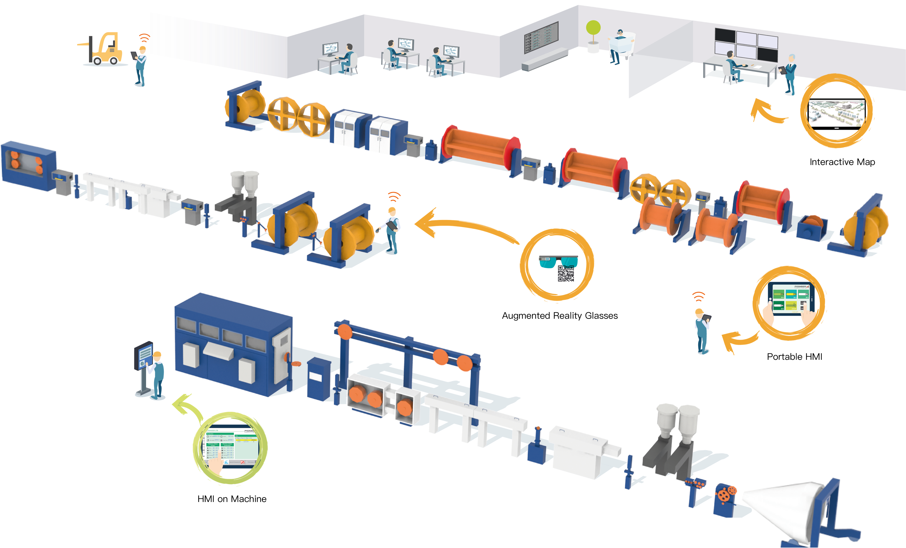
DESIGN
Design Goals
1. Present data deviations to the user quickly and clearly, show current resources and display their status.
2. A right visual representation for the data to reduce complexity.
3. Follow clear and consistent naming conventions and avoid information duplication.
4. Priority the data and avoid wasting time on page changing.
5. The layout should be based on the technique
2. A right visual representation for the data to reduce complexity.
3. Follow clear and consistent naming conventions and avoid information duplication.
4. Priority the data and avoid wasting time on page changing.
5. The layout should be based on the technique
PORTABLE HMI
Information Architecture
Based on the feedback from the focus group and the evaluation of the previous user interface, I understand the priority of different information. I considered the total production of one order as important information, I designed it as a repetition shown
in each page. Here is the information architecture that I created for the portable HMI:
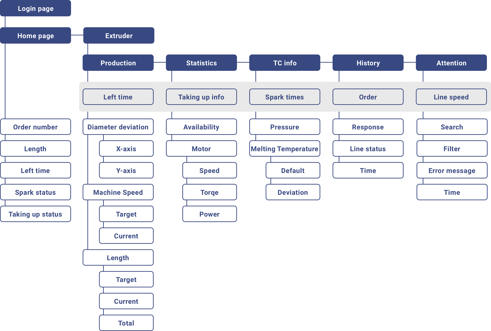
PORTABLE HMI
Wireframe
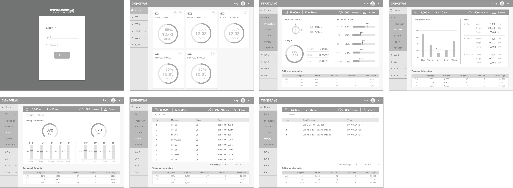
PORTABLE HMI
Wireframe
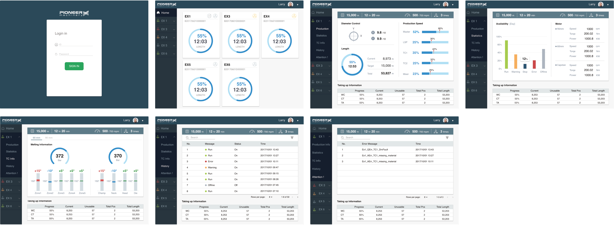
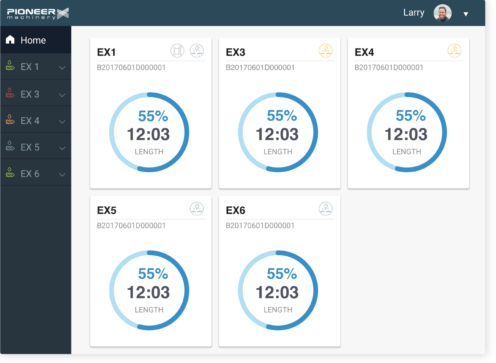
1. Home page
The user is factory advisors, we focus on visualizing production progress information. The home page provides an overview of all production lines. As the emergency is always the first thing in the factory, I designed the status of the production line
in the navigation bar.
2. Production page
In the cable production process, temperature, machine speed, and other factors will affect the yield. Therefore, tracking the current status and target status is important. We present both the default value and the current value in the interface. In the
production speed, we use visualization instead of the text reading to display the speed deviation.
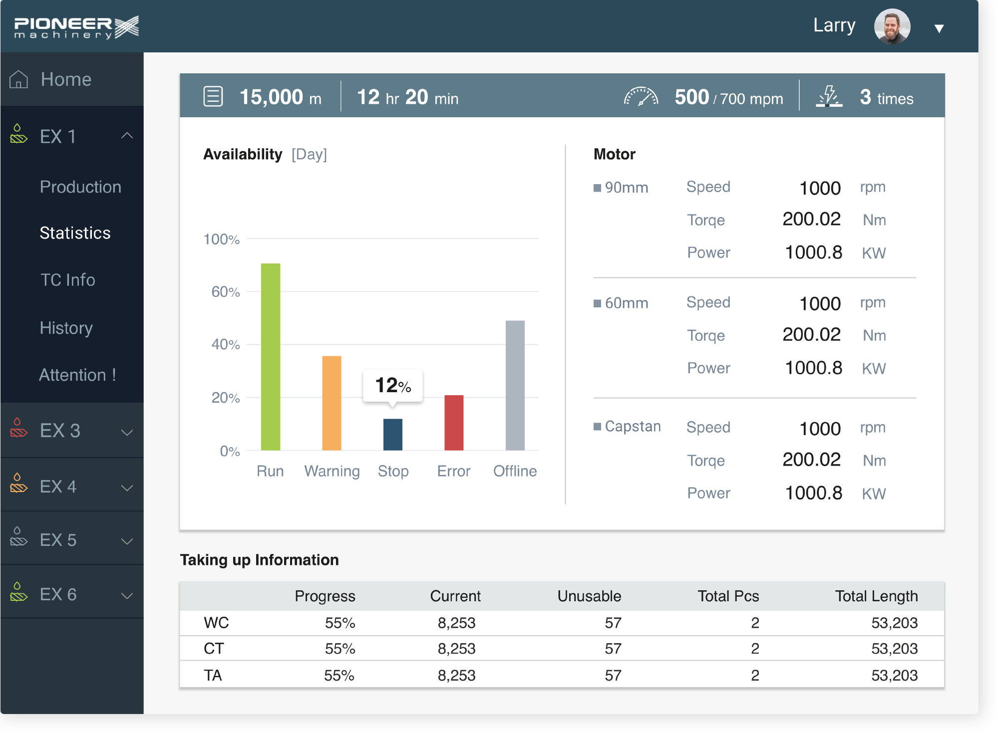
3. Statistic page
The statistic page shows the speed, torque and power consumption of motors. In availability, we use colors that are the same used in navigation bar to indicate the status of production lines. It is more intuitive than text.
4. TC information page
There are several zones in the extruder to melt the plastic pellets when it passing. Control the temperature well and the excluder will not be clogged by plastic pellets. The tolerance value of the temperature was five degrees. We design a chart to present
the compare of default temperature and current value. Besides, the color also shows the situation of temperature deviation. Green is that the temperature is within the safe zone. Red is that the temperature is higher
than the default and out of the safe zone. Blue is that the temperature is lower than the default and out of the safe zone.
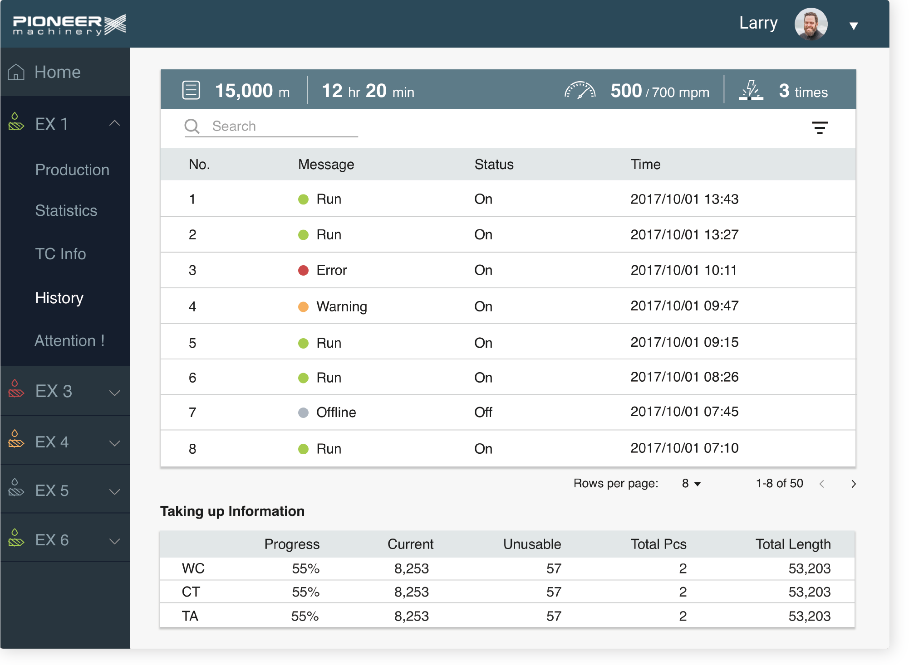
5. History page
The history page shows the production line history. Although it's common to use the slider to view the data list, our hardware could only support single-touch and the slider action could not be triggered. We design the history list being ten rows per
page and with a click, the history list will change to the next ten rows to reduce the process of repetitive clicking.
INTERACTIVE MAP
3D Prototype
The interactive map is designed for engineers who stay in the control room. Through the map, the engineer can view all production lines in the factory and their status. With a click of each production line, there is the basic information of the production.
Due to the fact that I joined the interactive map development team when my intern was drawing to the close, I only designed the initial overlook of the user interface. In this term, I focus on designing the interface which
meets the technology that engineers could support instead of designing intuitive and user-centered interface.


INTERACTIVE MAP
Icons Design
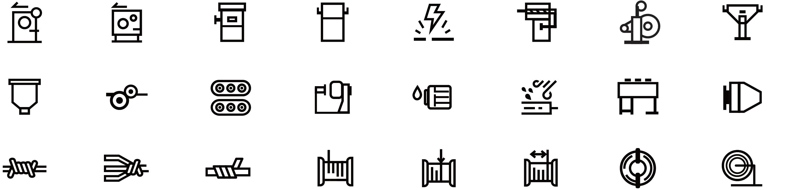
Explore Different Layouts
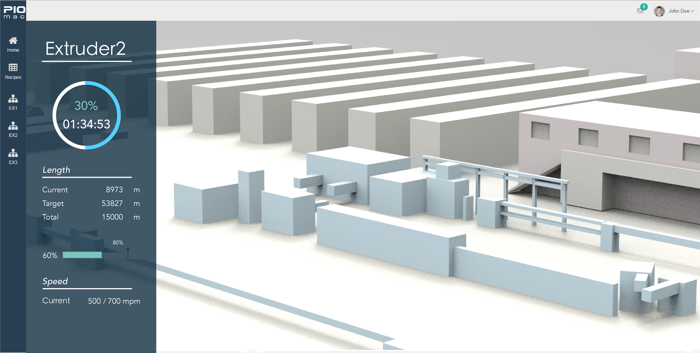
Version 1
Version 1 was built by D3 js, and there are visualization data on it. With one click of machine, the basic information will slide out from the left.
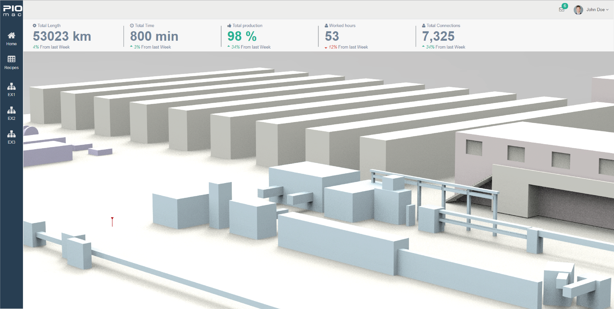
Version 2
Version 2 was built by Charts js. We only showed important information on top. And the view of the map will not be divided by the information.
INTERACTIVE MAP
3D Prototype
 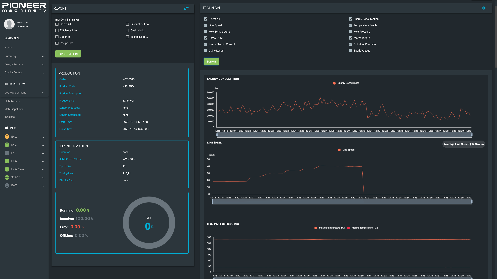
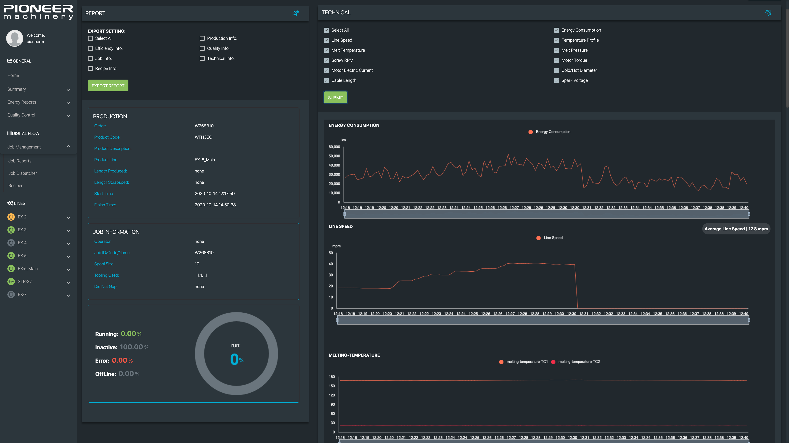